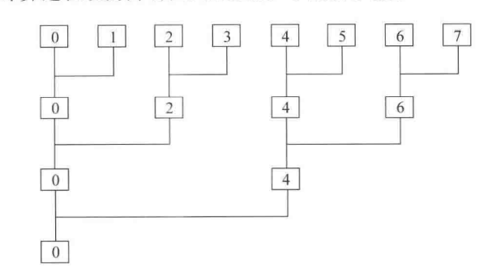
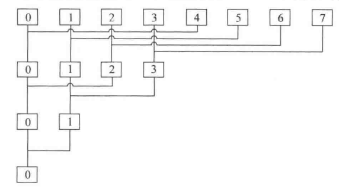
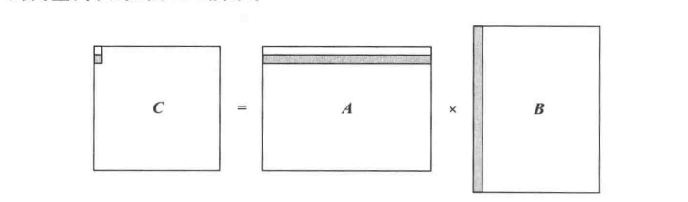
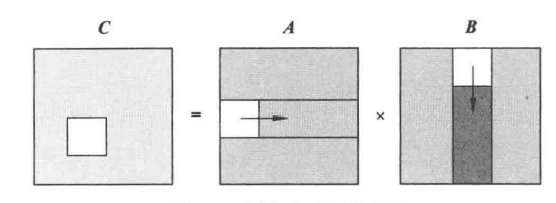
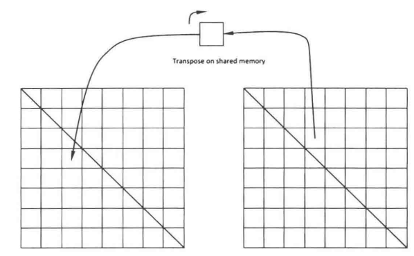

简介
本文主要介绍一些 cuda 关于矩阵相关运算的入门编程及相关技巧，是我的学习笔记，比较适合初学者。
矩阵相加
这一节通过矩阵相加来介绍 cuda 编程的常规流程，并介绍一些术语
流程
- memory alloc 用于在 gpu 上开辟空间
cudaMalloc((void**) &d_o, sizeof(float) * (M * N));
cudaMalloc((void**) &d_a, sizeof(float) * (M * N));
cudaMalloc((void**) &d_b, sizeof(float) * (M * N));其中 M 和 N 分别是矩阵的行和列
- copy data
cudaMemcpy(d_o, h_o, sizeof(float) * (M * N), cudaMemcpyHostToDevice);
cudaMemcpy(d_a, h_a, sizeof(float) * (M * N), cudaMemcpyHostToDevice);
cudaMemcpy(d_b, h_b, sizeof(float) * (M * N), cudaMemcpyHostToDevice);把 cpu 上的数据拷贝到 gpu 上来，一般我们把 cpu 叫做 Host，然后 gpu 叫做 device，可以简单理解 gpu 时主机上受 cpu 支配的一个设备
- kernel function
__global__ void m_add(float *c, float *a, float *b, int m, int n){
// get ind
const int block_ind = blockIdx.x;
const int thread_ind = threadIdx.x;
const int step = blockDim.x * gridDim.x;
int curr_ind = block_ind * blockDim.x + thread_ind;
while (curr_ind < m * n) {
c[curr_ind] = a[curr_ind] + b[curr_ind];
curr_ind += step;
}
}kernel function 必须要有关键字 __global__ 需要计算的是 step，就是并行计算一次，下标需要跨越多少来更换，它等于 每个 block 的有多少线程即 blockDim.x 和每个 grid 有多少即 gridDim.x 。这里的示范是只有一个维度的并行，矩阵可以 x， y 两个维度
- copy results back to CPU
cudaMemcpy(h_o, d_o, sizeof(float) * (M * N), cudaMemcpyDeviceToHost);
cudaMemcpy(h_a, d_a, sizeof(float) * (M * N), cudaMemcpyDeviceToHost);
cudaMemcpy(h_b, d_b, sizeof(float) * (M * N), cudaMemcpyDeviceToHost);将计算结果拷回 cpu 中
- free memory
cudaFree(d_a);
cudaFree(d_b);
cudaFree(d_o);
free(h_a);
free(h_b);所以一般一共 5 个过程：开辟空间、拷贝数据、执行 kernel 函数、拷贝结果、释放内存
最后 nvcc add.cu -o add.o 生成可执行文件
一些 API 的解释
cudaEvent_t
可以理解为一个数据类型 – 指针类型的变量
cudaEventCreate(cudaEvent_t *event)
创建 event 变量
cudaEventRecord(cudaEvent_t event, cudaStream_t stream __dv(0))
记录 event 事件，对同一个 event，可以调用多次 cudaEventRecord(), 最新调用的值覆盖之前的旧值
cudaEventSynchronize(cudaEvent_t event)
用于 event 事件的同步，在调用此函数之后保证 event 已经结束
cudaEventElapsedTime(float *ms, cudaEvent_t start, cudaEvent_t end)
统计start和end 2个event之间的时间间隔, 单位毫秒(ms)，此函数的时间分辨率为0.5us
二维的矩阵相加示例
#include <iostream>
#define M 2000
#define N 1000
using namespace std;
__global__ void m_add(float c[][N], float a[][N], float b[][N], int m, int n){
// get ind
int x_i = threadIdx.x + blockIdx.x;
int y_i = threadIdx.y + blockIdx.y;
if (x_i < m && y_i < n) {
c[x_i][y_i] = a[x_i][y_i] + b[x_i][y_i];
}
}
int main() {
float (*h_a)[N] = new float[M][N];
float (*h_b)[N] = new float[M][N];
float (*h_o)[N] = new float[M][N];
float (*d_a)[N], (*d_b)[N], (*d_o)[N];
// define timer
cudaEvent_t start, stop;
// initialize data
for (int i = 0; i < M; ++i) {
for (int j = 0; j < N; ++j) {
h_a[i][j] = i + j + 2.232f;
h_b[i][j] = i + 2 * j;
}
}
// GPU memory allco
cudaMalloc((void**) &d_a, sizeof(float) * (M * N));
cudaMalloc((void**) &d_b, sizeof(float) * (M * N));
cudaMalloc((void**) &d_o, sizeof(float) * (M * N));
// copy from CPU to GPU
cudaMemcpy(d_a, h_a, sizeof(float) * (M * N), cudaMemcpyHostToDevice);
cudaMemcpy(d_b, h_b, sizeof(float) * (M * N), cudaMemcpyHostToDevice);
cudaEventCreate(&start);
cudaEventCreate(&stop);
cudaEventRecord(start, 0);
// cuda add
dim3 block_num(M, N);
m_add<<<block_num, 1>>>(d_o, d_a, d_b, M, N);
// copy results back to CPU
cudaMemcpy(h_o, d_o, sizeof(float) * (M * N), cudaMemcpyDeviceToHost);
cudaEventRecord(stop, 0);
cudaEventSynchronize(stop);
float elapsedTime;
cudaEventElapsedTime(&elapsedTime, start, stop);
cout << "The kernel function is during: " << elapsedTime << endl;
cout << "The final number (M * N): " << h_o[234][21];
// free GPU mem
cudaFree(d_a);
cudaFree(d_b);
cudaFree(d_o);
free(h_a);
free(h_b);
return 0;
}向量内积
向量内积分为两步：点对点相乘，然后所有元素求和。这节内容的重点不是讲点对点相乘，因为其实这个和相加一样的。主要讲第二步求和，也叫做归约。
不同的向量内积计算方式
- 分散归约

如上图，是分散归约的示意图，也就是每轮求和，都与自己旁边的线程进行相加，最后归约到 0 线程，代码如下：
__global__ void vector_dot_product(float *c, float *a, float *b, int n){
// alloc shared momery for effictive computing
__shared__ float tmp_arr[thread_num];
const int t_idx = threadIdx.x;
const int b_dim = blockDim.x;
int tid = t_idx;
double temp = 0.0;
while(tid<n) {
temp += a[tid] * b[tid];
tid += b_dim;
}
tmp_arr[t_idx] = temp;
// wait all threads for temp
__syncthreads();
int i = 2, j = 1;
while(i <= thread_num) {
if ((t_idx % i) == 0) {
tmp_arr[t_idx] += tmp_arr[t_idx + j];
}
__syncthreads();
i *= 2;
j *= 2;
}
if (t_idx == 0) c[0] = tmp_arr[0];
}分散归约存在缺陷：访问相邻两个单元，违背了访存对齐原则；需要多个 warp 性能损失；可能引发 bank conflict。__syncthreads(); 也就是等待同一个 block 的线程都完成此操作。
- 低线程归约

如图，顾名思义就是将后面的线程全部归约到前面的线程中来，每次减少一半。代码如下：
__global__ void vector_dot_product(float *c, float *a, float *b, int n){
// alloc shared momery for effictive computing
__shared__ float tmp_arr[thread_num];
const int t_idx = threadIdx.x;
const int b_dim = blockDim.x;
int tid = t_idx;
double temp = 0.0;
while(tid<n) {
temp += a[tid] * b[tid];
tid += b_dim;
}
tmp_arr[t_idx] = temp;
// wait all threads for temp
__syncthreads();
int i = thread_num / 2;
while(i != 0) {
if (t_idx < i) {
tmp_arr[t_idx] += tmp_arr[t_idx + i];
}
__syncthreads();
i /= 2;
}
if (t_idx == 0) c[0] = tmp_arr[0];
}- cpu 进行二次归约
以上都是单个 block 多线程的计算，显然如果开多个 block，以上只是计算了每个 block 的结果，还要对各个 block 的结果进行二次归约。首先在 gpu 上计算各个 block 的结果
__global__ void vector_dot_product(float *c, float *a, float *b, int n){
// alloc shared momery for effictive computing
__shared__ float tmp_arr[thread_num];
const int t_idx = threadIdx.x;
const int b_idx = blockIdx.x;
const int step = blockDim.x * gridDim.x;
int tid = t_idx + b_idx * blockDim.x;
double temp = 0.0;
while(tid<n) {
temp += a[tid] * b[tid];
tid += step;
}
tmp_arr[t_idx] = temp;
// wait all threads for temp
__syncthreads();
int i = thread_num / 2;
while(i != 0) {
if (t_idx<i) {
tmp_arr[t_idx] += tmp_arr[t_idx + i];
}
__syncthreads();
i /= 2;
}
if (t_idx == 0) c[b_idx] = tmp_arr[0];
}然后在 cpu 上对各个 block 的结果进行归约
if (cpu_sum) {
float temp = 0;
for (int i = 0; i < block_num; ++i) {
temp += h_o[i];
}
h_o[0] = temp;
}- 基于原子操作的向量内积
原子操作 (ATOM) 可以保证线程互斥地访问全局存储或共享存储上的某一数据，因此可以用它来进行简化两次归约，但要注意原子操作结果是直接写回存储，返回值是旧值。
__global__ void vector_dot_product(float *c, float *a, float *b, int n) {
if ((threadIdx.x == 0) && (blockIdx.x == 0)) {
c[0] = 0.0;
}
__shared__ float tmp[thread_num];
const int tidx = threadIdx.x;
const int bidx = blockIdx.x;
const int t_n = blockDim.x * gridDim.x;
int tid = bidx * blockDim.x + tidx;
double temp = 0.0;
while (tid < n) {
temp += a[tid] * b[tid];
tid += t_n;
}
tmp[tidx] = temp;
__syncthreads();
int i = blockDim.x / 2;
while(i != 0) {
if (tidx < i) {
tmp[tidx] += tmp[tidx + i];
}
__syncthreads();
i /= 2;
}
if (tidx == 0) {
atomicAdd(c, tmp[0]);
}
}其实就是最后一步不一样，前面是低线程归约的内容
- 计数法实现多 block 向量内积
__device__ void vector_dot(float *t, volatile float *tmp) {
const int tidx = threadIdx.x;
int i = blockDim.x / 2;
while (i != 0) {
if (tidx < i) {
tmp[tidx] += tmp[tidx + i];
}
__syncthreads();
i /= 2;
if (tidx == 0) t[0] = tmp[0];
}
}
__device__ unsigned int lockcount = 0;
__global__ void vector_dot_product(float *c, float *a, float *b, float *t, int n) {
__shared__ float tmp[thread_num];
const int tidx = threadIdx.x;
const int bidx = blockIdx.x;
const int t_n = blockDim.x * gridDim.x;
int tid = bidx * blockDim.x + tidx;
double temp = 0.0;
while (tid < n) {
temp += a[tid] * b[tid];
tid += t_n;
}
tmp[tidx] = temp;
__syncthreads();
vector_dot(&t[bidx], tmp);
__shared__ bool lock;
__threadfence();
if (tidx == 0) {
unsigned int lockiii = atomicAdd(&lockcount, 1);
lock = (lockcount==gridDim.x);
}
__syncthreads();
if(lock) {
// block_num must less than thread_num
tmp[tidx] = t[tidx];
__syncthreads();
vector_dot(c, tmp);
// lockcount=0;
}
}
计数法先对每个 block 完成归约过程，保存在中间结果 t 中，然后使用语句 __threadfence(); 后接上原子操作实现栅栏同步，直到最后一个 block 抵达栅栏，读取 t 中的数据完成归约，这里注意，开的 block 必须小于线程数才行，不然 tmp[tidx] = t[tidx]; 会复制不完全。
- 基于低线程归约的优化
对于低线程的归约，我们可以进行一些优化，主要从减少同步开销和 while 循环展开入手。思路为：一个 warp 是 32 线程，因此有着天然的同步机制，我们可以省去 __syncthreads() ；while 循环的展开，至于什么是 while 循环的展开，我们先看整体优化的代码。
__global__ void vector_dot_product_3_2(float *c, float *a, float *b, float *t, int n) {
__shared__ float tmp[thread_num];
const int tidx = threadIdx.x;
const int bidx = blockIdx.x;
const int t_n = blockDim.x * gridDim.x;
int tid = bidx * blockDim.x + tidx;
double temp = 0.0;
while (tid < n) {
temp = __fadd_rn(temp, __fmul_rn(a[tid],b[tid]));
tid += t_n;
}
tmp[tidx] = temp;
// wait for all thread to complete coping
__syncthreads();
//in-place reduction in global memory
if(blockDim.x>=1024 && tidx <512) tmp[tidx] = __fadd_rn(tmp[tidx], tmp[tidx+512]);
__syncthreads();
if(blockDim.x>=512 && tidx <256) tmp[tidx] = __fadd_rn(tmp[tidx], tmp[tidx+256]);
__syncthreads();
if(blockDim.x>=256 && tidx <128) tmp[tidx] = __fadd_rn(tmp[tidx], tmp[tidx+128]);
__syncthreads();
if(blockDim.x>=128 && tidx <64) tmp[tidx] = __fadd_rn(tmp[tidx], tmp[tidx+64]);
__syncthreads();
if (tidx < 32) {
volatile float *tmp_1 = tmp;
tmp_1[tidx] = __fadd_rn(tmp_1[tidx], tmp_1[tidx+32]);
tmp_1[tidx] = __fadd_rn(tmp_1[tidx], tmp_1[tidx+16]);
tmp_1[tidx] = __fadd_rn(tmp_1[tidx], tmp_1[tidx+8]);
tmp_1[tidx] = __fadd_rn(tmp_1[tidx], tmp_1[tidx+4]);
tmp_1[tidx] = __fadd_rn(tmp_1[tidx], tmp_1[tidx+2]);
tmp_1[tidx] = __fadd_rn(tmp_1[tidx], tmp_1[tidx+1]);
if (tidx==0) {
c[bidx] = tmp_1[0];
}
}
}从上面的代码可以看出，我们首先将每个线程的结果 copy 到 tmp ，然后进行 while 循环展开。最后对剩余 64 个线程进行归约。那我们来介绍一下什么是 while 循环展开
for (int i=0;i<100;i+=4)
{
a[i+0]=b[i+0]+c[i+0];
a[i+1]=b[i+1]+c[i+1];
a[i+2]=b[i+2]+c[i+2];
a[i+3]=b[i+3]+c[i+3];
}上面段代码就是 while 循环展开，咋一看是不是没有什么不同，但从判断次数来讲其实是变少了，比起 step 为 1 来说。但是如果这个是在 cpu 上跑，不会有任何区别，因为我们不展开，编译器也会帮我们做。但是目前 cuda 的编译器不会帮我们做这种优化，因此人为展开核函数内的循环，能够提升性能。主要目的是减少指令的消耗。
一些概念的解释
- 原子操作
原子操作指当一个线程对某个显存变量依次进行“读-计算-写”时，不能插入其他操作。在 GPU 进行并行计算的时候编译器会给每个线程生成 4 个寄存器：”block_index”、”thread_index”、”value”、”counter”。其中，counter 用于存放显存中的变量，对变量进行操作时，先读取到寄存器，再从寄存器进行操作后，写到原来的显存变量，此时需要一个寄存器，而这个寄存器 counter 是所有线程争抢的资源，导致出错。
常用的原子操作如下
| 函数名 | 解释 |
|---|---|
| atomicAdd(&value, add_num) | value = value + add_num |
| atomicSub(&value, sub_num) | value = value + sub_num |
| atomicExch(&value, num) | value = num |
| atomicMax(&value, num) | value = max(value, num) |
| atomicMin(&value, num) | value = min(value, num) |
| atomicInc(&value, compare) | if (value <= compare) value++ else 0 |
| atomicDec(&value, compare) | if (value <= compare) value– else 0 |
| atomicCAS(&value, compare) | if (value != compare) value = compare |
| atomicAnd(&value, add_num) | value = value & num |
| atomicOr(&value, add_num) | value = value |
| atomicXor(&value, add_num) | value = value ^ num |
| 需要注意的是，原子操作均写入内存，返回值为旧值。另外原子操作本质是串行的，大量使用会对性能有影响。 |
- 关于计算法中的
__threadfence;
其实可以简单的把它理解为 block 间的同步，其阻塞 grid 内的线程发出的读写操作完成，一般结合原子操作来减少函数的调用以实现 block 间的同步
[1] write data
[2] __threadfence() 同步
[3] atomic 来进行一个确定都到达栅栏关于上述的计数法，只用 2 或者 3 都能保证结果正确，但是如果 atomic 写入的是一个长数组就可能出错
- 关键字
volatile
其中关键字 volatile 的作用是控制变量将结果写到内存里面，而不是其他地方，因为下一行马上要用到。比如 tmp_1[tidx] = __fadd_rn(tmp_1[tidx], tmp_1[tidx+32]);里面前 32 个线程的值被改了，tmp_1[tidx] = __fadd_rn(tmp_1[tidx], tmp_1[tidx+16]); 这一行又要用到，如果写入到缓存里面就会出现读到错误的数据。另外当要求使用 volatile 声明的变量的值的时候，系统总是重新从它所在的内存读取数据，即使它前面的指令刚刚从该处读取过数据。并且可以保证读取的数据立刻被保存。比如
int a = 1;
a = 2;
a = 3;那么代码可能被编译器转为机器码的时候优化为 a = 3 ，三条转为一条，但是在上述 cuda 代码中是我们不愿意看到的情况，这个时候 volatile 就有效果了。
矩阵乘法
矩阵乘法可以看作内积的集合，也是本篇文章最难的一节。如下图所示，这里 A 矩阵大小为 m 行 l 列，B 矩阵为 l 行 n 列，相乘后得 C 为 m 行 n 列。

这里我们都假设 A、B 为方针，C 也就自然为方阵了。
block 线程循环
我们使用每个 block 计算 C 中的一行，启动 n 个 block 来计算矩阵中的 n 行。
__global__ void mat_mul (float *c, size_t n_c, const float *a, size_t n_a, const float *b, size_t n_b, int n) {
const int tid = threadIdx.x;
const int row = blockIdx.x;
int i, j;
double tmp = 0.0;
for (j = tid; j < n; j += blockDim.x) {
tmp = 0.0;
for (i = 0; i < n; ++i) {
tmp += a[row * n_a + i]; * b[i * n_b + j];
}
c[row * n_c + j] = tmp;
}
}使用 shared memory
这里对于每个 block 来说，要不断访问 A 中的 blockIdx.x 行多次，但是 A 中的数据是在 L1 Cache 上的，如果我们能用共享储存代替全局储存，那么可以对 GPU 计算进行优化，因此这一步是从访存方面入手的。
__global__ void mat_mul (float *c, size_t n_c, const float *a, size_t n_a, const float *b, size_t n_b, int n) {
extern __shared__ float data[];
const int tid = threadIdx.x;
const int row = blockIdx.x;
int i, j;
for (i = tid; i < n; i += blockDim.x) {
data[i] = a[row * n_a + i];
}
__syncthreads();
double tmp = 0.0;
for (j = tid; j < n; j += blockDim.x) {
tmp = 0.0;
for (i = 0; i < n; ++i) {
tmp += data[i] * b[i * n_b + j];
}
c[row * n_c + j] = tmp;
}
}我们还可以继续访存优化，对于不是 512 x 512 规整的矩阵，此时矩阵存储不对齐，将会影响访存性能，因此可以使用 padding 的思想，使得矩阵的大小变成规整的矩阵
关于使用 cudaMallocPitch 进行访存对齐，可以理解为我们对矩阵的存储实际上是行优先的，假设全局内存是被划分为 32 byte 为单位的段，那么列数不是 32 的倍数时，访问矩阵每行的首地址时就会和全局内存中分段的首地址不一样，这样的访问属于非合并的。但是我们对每行进行 padding 使其为 32 倍数的列数，这样就对齐了，注意我们不需要管有多少行，padding 只针对列数
size_t p_a, p_b, p_o;
cudaMallocPitch((void**) &d_a, &p_a, sizeof(float) * M, N);
cudaMallocPitch((void**) &d_b, &p_b, sizeof(float) * M, N);
cudaMallocPitch((void**) &d_o, &p_o, sizeof(float) * M, N);
cudaMemcpy2D(d_a, p_a, h_a, sizeof(float) * N, sizeof(float) * N, M, cudaMemcpyHostToDevice);
cudaMemcpy2D(d_b, p_b, h_b, sizeof(float) * N, sizeof(float) * N, M, cudaMemcpyHostToDevice);
mat_mul<<<M, N, sizeof(float) * N>>>(d_o, p_o / sizeof(float), d_a, p_a / sizeof(float), d_b, p_b / sizeof(float), N);
cudaMemcpy2D(h_o, sizeof(float) * N, d_o, p_o, sizeof(float) * N, M, cudaMemcpyDeviceToHost);这里介绍一下相关的 API
- cudaMallocPitch (void* devPtr, size_t* pitch, size_t widthInBytes, size_t height)
- devPtr：开辟矩阵的数据的头指针
- pitch：分配存储器的宽度，以字节为单位(cuda的返回值)
- width：分配矩阵的列数，一般是 width x sizeof(type)
- height：分配矩阵的行数
- 在设备上分配 widthInBytes * height 字节的线性内存，并返回分配内存的指针 *devPtr。函数将确保在任何给出的行中对应的指针是连续的。
- cudaMemcpy2D(void dst, size_t dpitch, const void src, size_t spitch,
size_t width, size_t height, enum cudaMemcpyKind kind)- dst: 目的矩阵内存头指针
- dpitch: dst指向的2D数组中的内存宽度，以字节为单位，是cuda为了读取方便，对齐过的内存宽度，可能大于一行元素占据的实际内存。
- src：源矩阵内存头指针
- spitch: src 指向的 2D 数组中的内存宽度，以字节为单位
- width: src 指向的 2D 数组中一行元素占据的实际宽度。以字节为单位，等于 width*sizeof(type)
- height: src 指向的2D数组的行数
- kind：拷贝数据的方向,从src指向的内存区域拷贝数据到dst指向的内存区域
棋盘阵列矩阵乘法

由于访问 B 矩阵仍然处于全局储存，且访问次数没有变化。我们可以考虑使用二维 block 和二维 thread 来对矩阵进行分块。其中一个 block 对应一块，如上图，C 中的一块，由同行号的 A 和同列号的 B 计算得到。而且将可以将小块计算所需数据放入共享存储中，该数据将被复用多次，非常划算。
// chessboard array matmul
__global__ void mat_mul (float *c, size_t n_c, const float *a, size_t n_a, const float *b, size_t n_b, int n) {
__shared__ float matA[threadnum][threadnum];
__shared__ float matB[threadnum][threadnum];
const int tid_c = threadIdx.x;
const int tid_r = threadIdx.y;
const int bid_c = blockIdx.x * threadnum;
const int bid_r = blockIdx.y * threadnum;
int i, j;
double res = 0.0;
for (j = 0; j < n; j += threadnum) {
matA[tid_r][tid_c] = a[(bid_r+tid_r)*n_a+tid_c+j];
matB[tid_r][tid_c] = b[(tid_r+j)*n_b+bid_c+tid_c];
__syncthreads();
for (i = 0; i < threadnum; ++i) res += matA[tid_r][i] * matB[i][tid_c];
__syncthreads();
}
if (tid_r+bid_r<n && tid_c+bid_c<n) {
c[(bid_r+tid_r)*n_c+bid_c+tid_c] = res;
}
}由上述代码可知，C 中每一个小块 (threadnum x threadnum)，可以由 A 中的长条 (threadnum x n) 和 B 中的长条 (n x threadnum) 在一个 block 中计算得到。
Kahan’s Summation Formula
我们还可以使用 Kahan’s Summation Formula 来用 float 存储中间结果
__global__ void mat_mul_k (float *c, size_t n_c, const float *a, size_t n_a, const float *b, size_t n_b, int n) {
__shared__ float matA[threadnum][threadnum];
__shared__ float matB[threadnum][threadnum];
const int tid_c = threadIdx.x;
const int tid_r = threadIdx.y;
const int bid_c = blockIdx.x * threadnum;
const int bid_r = blockIdx.y * threadnum;
int i, j;
float res = 0.0;
float comp = 0.0;
float t = 0.0;
for (j = 0; j < n; j += threadnum) {
matA[tid_r][tid_c] = a[(bid_r+tid_r)*n_a+tid_c+j];
matB[tid_r][tid_c] = b[(tid_r+j)*n_b+bid_c+tid_c];
__syncthreads();
for (i = 0; i < threadnum; ++i) {
comp -= matA[tid_r][i] * matB[i][tid_c];
t = res - comp;
res = t;
}
__syncthreads();
}
if (tid_r+bid_r<n && tid_c+bid_c<n) {
c[(bid_r+tid_r)*n_c+bid_c+tid_c] = res;
}
}Kahan’s Summation Formula 是用来防止大数吃掉小数的，比如 float 一般最多只能有 7 位有效数字，此时如果 float a = 123456, float b = 2.323 当两个数求和时，末尾的 2 和 3 就有可能被抹掉了，因为只能有 7 位数字左右。
那么 kahan 求和就是用来避免这种精度损失的问题，先用一个 temp 来记住损失的部分，下次再加回来
float sum = 0;
float c = 0;
float t = 0;
for (int num : nums) {
float y = num - c; // c 一般为一个非正数
t = sum + y; // 此步可能存在大数吞小数的情况
// 也就是 t 可能比 sum 和 y 的和要小
c = t - sum - y; // 存在吞数的情况 c 就为负数，由第一步加回来
sum = t;
}因此我们的核函数可以修改为
__global__ void mat_mul_k (float *c, size_t n_c, const float *a, size_t n_a, const float *b, size_t n_b, int n) {
__shared__ float matA[threadnum][threadnum];
__shared__ float matB[threadnum][threadnum];
const int tid_c = threadIdx.x;
const int tid_r = threadIdx.y;
const int bid_c = blockIdx.x * threadnum;
const int bid_r = blockIdx.y * threadnum;
int i, j;
float res = 0.0;
float comp = 0.0;
float t = 0.0;
for (j = 0; j < n; j += threadnum) {
matA[tid_r][tid_c] = a[(bid_r+tid_r)*n_a+tid_c+j];
matB[tid_r][tid_c] = b[(tid_r+j)*n_b+bid_c+tid_c];
__syncthreads();
for (i = 0; i < threadnum; ++i) {
comp -= matA[tid_r][i] * matB[i][tid_c];
t = res - comp;
res = t;
}
__syncthreads();
}
if (tid_r+bid_r<n && tid_c+bid_c<n) {
c[(bid_r+tid_r)*n_c+bid_c+tid_c] = res;
}
}小结
- 数据对齐，主要是指通过 padding 的方式将存储空间对齐
- 使用二维线程来更好利用共享存储，提升程序性能
- 如果中间变量的精度不够，可以使用 kahan 求和法来进行精度的补救
矩阵转置
1 D 线程实现转置矩阵
矩阵转置也是十分常见的运算之一，但是对转置进行实现时，读连续和写连续一般不可兼得。首先我们可以实现一维的读连续实现转置矩阵：
__global__ void mat_transpose_1_1 (float *c, float *a, int m, int n) {
CUDA_1D_KERNEL_LOOP(i, n*m) {
int col = i % m;
int row = i / m;
c[col*m+row] = a[row*n+col];
}
}同时也易得，写连续的实现转置矩阵：
__global__ void mat_transpose_1_2 (float *c, float *a, int m, int n) {
CUDA_1D_KERNEL_LOOP(i, n*m) {
int col = i % m;
int row = i / m;
c[row*m+col] = a[col*n+row];
}
}2 D 线程实现转置矩阵
当然我们可以使用 2D 线程来实现转置矩阵，但是要注意每个 block 所开线程总数（即 x、y、z 三个维度）不能超过能开总和，因为这个值一般为 1024 比较小：
__global__ void mat_transpose_2_1(float *c, float *a, int m, int n)
{
const unsigned int xIndex = blockDim.x * blockIdx.x + threadIdx.x;
const unsigned int yIndex = blockDim.y * blockIdx.y + threadIdx.y;
if ((xIndex < n) && (yIndex < m))
{
unsigned int ind_a = yIndex * n + xIndex;
unsigned int ind_c = xIndex * m + yIndex;
c[ind_c] = a[ind_a];
}
}由上段程序可以看出依然是一个读连续的实现，如何进行读写都连续的转置矩阵实现呢？我们可以考虑使用上节棋盘矩阵乘法所使用的分块思想来实现。先读连续的写进共享矩阵，然后再写连续的写进输出，如下图所示。

__global__ void mat_transpose_2_2(float *c, float *a, int m, int n)
{
__shared__ float tmp[BLOCK_DIM][BLOCK_DIM+1];
unsigned int xIndex, yIndex, bidx, bidy, ind_a, ind_c;
const int mm = (m + BLOCK_DIM - 1) / BLOCK_DIM;
const int nn = (n + BLOCK_DIM - 1) / BLOCK_DIM;
for (bidy=blockIdx.y; bidy<mm; bidy+=gridDim.y)
{
for (bidx=blockIdx.x; bidx<nn; bidx+=gridDim.x)
{
xIndex = bidx * blockDim.x + threadIdx.x;
yIndex = bidy * blockDim.y + threadIdx.y;
if ((xIndex < n) && (yIndex < m))
{
ind_a = yIndex * n + xIndex;
tmp[threadIdx.y][threadIdx.x] = a[ind_a];
}
__syncthreads();
xIndex = bidy * blockDim.x + threadIdx.x;
yIndex = bidx * blockDim.y + threadIdx.y;
if ((xIndex < m) && (yIndex < n))
{
ind_c = yIndex * m + xIndex;
c[ind_c] = tmp[threadIdx.x][threadIdx.y];
}
}
}
}并且我们同时可以应用上一节的技巧 对矩阵进行 padding 来对齐访存，同时我们在使用共享内存的时候，要注意 少量多次循环 使用的原则。